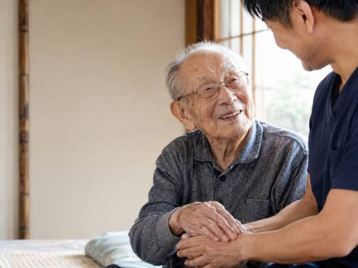
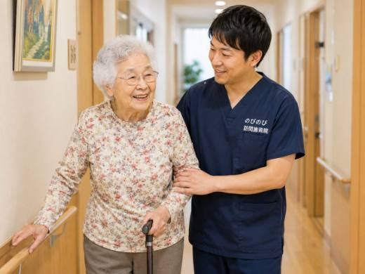
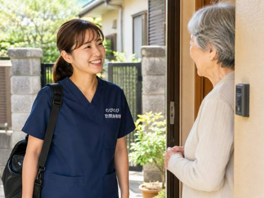

豊中で暮らすご家族が、痛みやしびれで通院に苦労している。近くに住んでいても、毎回の付き添いまでは難しい。そんなときに知っておいていただきたいのが、自宅で受けられる訪問鍼灸マッサージです。のびのび訪問施術院は、鍼やお灸を中心に、こわばった筋肉をゆるめる手技も組み合わせて、長引く痛みやしびれ、冷えに向き合います。医師の同意書があれば医療保険が使え、1割負担なら1回およそ395円。まずは「うちの親は対象になる？」の確認だけでもかまいません。
先に要点だけまとめます。豊中市内で通院がむずかしくなった方のご自宅や施設へ、国家資格を持つ施術者が伺う訪問鍼灸マッサージです。医師の同意にもとづく医療保険（はり・きゅう）を使い、1回の施術は総額3,950円、1割負担なら約395円が目安。要介護認定がなくても、医師が必要と認めれば利用できます。阪急宝塚線や北大阪急行の沿線から千里・庄内まで市内全域に対応し、お住まいの場所で料金は変わりません。膝や腰の痛み、坐骨神経痛、脳梗塞後のこわばり、しびれを、住み慣れた家で和らげていきます。
豊中市で、通院がつらくなってきた方へ
豊中市にお住まいの方から、こんな声をよくうかがいます。「近所の整形外科まで歩くのが、前よりずっとしんどくなった」「バスを乗り継ぐのがおっくうで、つい通院の足が遠のいてしまう」。年齢を重ねるほど、外に出る一歩が重くなっていくものです。
豊中市は、千里中央や桃山台のある北部から、庄内や野田町のあたりまで広く、駅の近くにお住まいの方もいれば、駅まで距離があるお宅もめずらしくありません。ひとりで、あるいはご高齢のご夫婦だけで暮らしていると、雨の日や体調のすぐれない朝に通院を続けるのは、大きな負担になります。そんなときに、自宅で受けられる施術という選択肢があることを、知っておいていただきたいと思っています。
豊中市で「訪問マッサージ」をお探しの方へ
「豊中 訪問マッサージ」と検索してこのページにたどり着かれた方もいらっしゃると思います。在宅で受ける施術はひとまとめにその言葉で呼ばれることが多いのですが、制度のうえでは、はり・きゅうの療養費と、あん摩マッサージ指圧の療養費という二つの枠組みに分かれています。対象になる体の状態がそれぞれ異なり、いずれも医師の同意など所定の要件があります。
のびのび訪問施術院は、はり・きゅうを施術のベースにしていて、保険はすべて鍼灸で算定します。その日の体の状態を確認しながら鍼やお灸を行い、必要に応じて手技やストレッチ、無理のない範囲で身体を動かす運動なども組み合わせます。二つの違いは訪問マッサージと訪問鍼灸の違いにまとめましたので、あわせてご覧ください。豊中市内は千里中央から庄内、服部、曽根のあたりまで全域に伺います。
ご自宅や施設へ、国家資格を持つ施術者がうかがいます
のびのび訪問施術院では、はり師・きゅう師・あん摩マッサージ指圧師といった国家資格を持つ施術者が、豊中市内のご自宅や入居先へ直接うかがい、はり・きゅう・マッサージを行います。ご自身で移動する必要はありません。玄関を開けていただければ、いつものお部屋が施術の場所になります。
症状ごとに、もう少し踏み込んでまとめたページもあります。立ち座りや階段がつらいなら豊中市で膝の痛みにお悩みの方へ、腰から足にかけての痛みやしびれなら豊中市の坐骨神経痛・腰から足の痛み、腕が上がらないつらさなら豊中市で五十肩・肩の痛みにお悩みの方へ、手足の動かしにくさなら豊中市でパーキンソン病の在宅ケアをお探しの方へ、脳梗塞のあとの麻痺やこわばりなら豊中市で脳梗塞の後遺症ケアをお探しの方へをご覧ください。
対応するのは市内全域です。阪急宝塚線沿線の豊中・岡町・曽根・服部天神といった中心部はもちろん、緑地公園や少路のある北部、南部の庄内エリアまで、どこへでもうかがいます。有料老人ホームやサービス付き高齢者向け住宅に入居されている方への訪問も承っています。どこまで来てもらえるのか気になる場合は、対応エリアはどこまで来てもらえる？もあわせてご覧ください。
豊中でよくいただくご相談
いちばん多いのは、膝や腰の痛みについてのご相談です。次いで、腰から足先にかけて響く坐骨神経痛、脳梗塞のあとに残った手足のこわばり、冷えやしびれといったお悩みが続きます。長く付き合ってきた痛みほど、ご本人も「もう歳だから仕方ない」とあきらめてしまいがちですが、体をこまめにほぐしておくことで、日々の過ごしやすさが変わってくることもあります。
症状ごとの詳しい向き合い方については、豊中市で膝の痛みにお悩みの方へのページでもお伝えしています。なお、施術は病気そのものを治すものではありません。効き方には個人差があり、同じ症状でも感じ方は人それぞれです。まずは今のつらさを少しでも軽くすること、それを大切にしています。
費用のこと。自己負担は1回およそ395円から
気になるのは、やはり料金だと思います。施術1回の総額は3,950円です。ここに医療保険を使うと、実際にお支払いいただくのは負担割合に応じた分だけになります。1割負担の方でおよそ395円です。たとえば週2回のペースで続けた場合、1割負担の方の1か月の目安はおよそ3,160円ほど。豊中市内であれば、どの地域にうかがっても料金は同じで、別途の出張費はいただきません。
保険の仕組みや自己負担の考え方をもう少し詳しく知りたい方は、料金はいくら？医療保険の自己負担額と仕組みで丁寧に解説しています。関節が動かしにくくならないための機能訓練も、鍼灸に加えるケアとして行っています。これらについて別途の料金はいただきません。
要介護認定は必要ありません
「介護認定を受けていないと利用できないのでは」とお考えの方が多いのですが、そうではありません。訪問での鍼灸マッサージは医療保険を使う療養費の制度で、要介護認定の有無は関係ないのです。必要なのは、かかりつけの医師が書く同意書です。この書類があれば保険を使って施術を受けられます。
保険の対象となるのは、医師が慢性的と認めた痛みで、神経痛、リウマチ、頸肩腕症候群、五十肩、腰痛症、頸椎捻挫後遺症の6つが定められています。介護保険の支給限度額とは別の枠組みなので、すでにデイサービスやヘルパーを利用していても、その限度額を圧迫することはなく、併用していただけます。ひとつだけご注意いただきたいのは、同じ部位について医療保険のリハビリと鍼灸マッサージを同時に保険で算定することはできない、という点です。
施術を始めるまでと、訪問のかたち
始め方はむずかしくありません。まずはお電話で、今のお体の状態やお困りごとをお聞かせください。そのうえで、かかりつけ医の同意書をご用意いただく流れになります。同意書に関する手続きは当院で進めますので、ご家族が付き添えないご家庭でもご心配いりません。書類が整えば、保険を使った施術を始められます。
訪問は平日にうかがいます。土曜・日曜・祝日はお休みをいただいており、時間は9時から18時までです。その範囲で、ご家庭のご都合に合わせて調整します。多くの方が、毎週同じ曜日・同じ時間帯での定期的な訪問を選ばれています。生活のリズムに施術が自然と組み込まれていくので、続けやすいと感じていただけるはずです。ケアマネジャーがついている方については、情報を共有しながら進めていきます。
豊中市で、まずどこに相談すればいいのか
「体が弱ってきたけれど、どこに聞けばいいのか分からない」。豊中市の方からのご相談で、いちばん多い入口がこれです。介護保険のことも、医療のことも、住まいのことも、窓口がばらばらに見えるからだと思います。
迷ったときの最初の一歩は、お住まいの地区を担当する地域包括支援センターです。豊中市ではこのセンターを「ほっと」と呼んでいて、中央・柴原・少路・千里・緑地・服部・庄内の7か所に置かれています。それぞれに分室があり、熊野田、螢池、北緑丘、南丘、高川、原田、幸町にもうかがえる窓口があります。担当は町名で決まりますので、どこになるかは豊中市の地域包括支援センターのページで確かめられます。
センターには保健師、社会福祉士、主任ケアマネジャーがいて、介護予防の相談から成年後見制度のことまで受け付けています。まだ介護認定を受けていない方にとっても、ここが入口になります。
ただ、訪問鍼灸マッサージは医療保険のサービスなので、介護保険のケアプランに載せる必要がありません。ですから、センターやケアマネジャーに相談してからでも、先に当院にお問い合わせいただいてからでも、どちらの順番でも進められます。すでに担当のケアマネジャーがいる方は、あとから共有していただければ大丈夫です。
住み慣れた豊中の家で、体をととのえる
通院の行き帰りにかかっていた時間と体力が要らなくなるのが、訪問のいちばん分かりやすい違いです。慣れた家の空気のなかで、力を抜いて施術を受けられることそのものが、体にとって良い時間になっていきます。豊中で長く暮らしてきた場所を離れずに、これからも自分らしく過ごしていく。その支えのひとつとして、訪問での施術を役立てていただけたらと思っています。まずは気軽に、お電話でご相談ください。
よくある質問
地域包括支援センターとケアマネジャー、どちらに先に相談すればいいですか？
どちらでも構いません。訪問鍼灸マッサージは医療保険のサービスで、介護保険のケアプランに載せる必要がないためです。まだ介護認定を受けていない方は、お住まいの町名を担当する地域包括支援センター「ほっと」が最初の相談先になります。すでに担当のケアマネジャーがいる方は、あとから共有していただければ大丈夫です。
豊中市内なら、どこまで来てもらえますか？
市内は全域で対応しています。阪急宝塚線や北大阪急行の沿線から、千里方面、庄内などの南部、市境の地域まで承っていますので、まずはお住まいを教えてください。この一覧にない地域でも、豊中市内であれば対応できるかを具体的にお答えします。
豊中での料金はいくらですか？
1回の施術は総額3,950円で、医療保険を使うと支払いは負担割合の分だけです。1割の方で約395円が目安。豊中市内はどこでも同額で、別途の出張費はかかりません。ひと月では、1割で週1回約1,580円、週2回約3,160円、週3回約4,740円ほどになります。
要介護認定がなくても受けられますか？
受けられます。要介護認定の有無にかかわらず、医師が鍼やお灸での治療を必要と認め、同意書があれば利用できます。手続きは当院が引き受けます。
豊中では、どんな体の悩みで頼めますか？
膝や腰の痛み、坐骨神経痛などの神経痛、脳梗塞後のこわばり、手足のしびれや冷え、五十肩などが目安です。いずれも医師が鍼やお灸での治療が必要と認めた慢性的な痛みが対象になります。まず主治医にもご相談ください。
豊中市では、症状ごとのページも用意しています。坐骨神経痛・腰から足の痛み、五十肩・肩の痛み、膝の痛み。いま気になっているところから読んでいただければ十分です。
介護保険のサービスと一緒に使えますか？
使えます。訪問鍼灸マッサージは医療保険のしくみで、介護保険とは別枠です。デイサービスやヘルパーの支給併用できます。
施設に入っていても来てもらえますか？
伺えます。豊中市内の有料老人ホームやサービス付き高齢者向け住宅にお住まいの方にも対応しています。ご希望があれば、施設や担当のケアマネジャーと連携しながら進めます。
通院しなくても続けられますか？
はい。ご自宅で受けられるので、豊中市内で通院がむずかしくなった方も、出かける負担なく続けられます。寝たまま・座ったままでも受けていただけます。
土日に来てもらえますか？
土曜・日曜・祝日はお休みをいただいています。うかがえるのは平日の9時から18時までです。ご家族が立ち会えない日でも、ご本人おひとりのところへうかがう形で続けておられる方はたくさんいます。初回だけ立ち会っていただけると、目標やご希望をうかがいやすくなります。
保険を使うには何が必要ですか？
かかりつけ医の同意書が必要です。豊中のかかりつけの先生にお願いでき、書類の段取りは当院が整えます。同意書が届き次第、保険を使った施術を始められます。

豊中市で坐骨神経痛・腰から足の痛みにお悩みの方へ｜自宅で受けられる訪問鍼灸マッサージ
続きを読む
豊中市で膝の痛みにお悩みの方へ｜自宅で受ける訪問鍼灸マッサージ
続きを読む
豊中市で五十肩・肩の痛みにお悩みの方へ｜自宅で受ける訪問鍼灸
続きを読む
伊丹市の訪問鍼灸マッサージ｜通院がつらくなっても、住み慣れた家でケアを続ける
続きを読む
摂津市の訪問鍼灸マッサージ｜通院がつらくなっても、住み慣れた家で腰・足のケアを続けられます
続きを読む